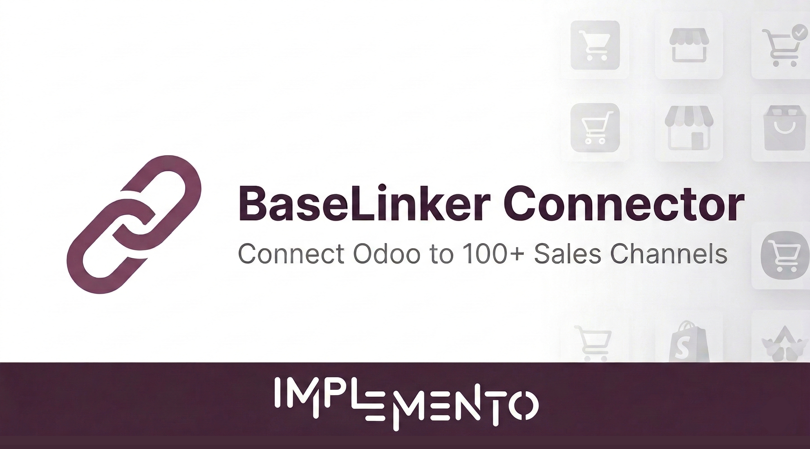

All our modules include documentation and setup guides.
IMPLEMENTO s.r.o. • support@implemento.eu

BaseLinker is a multichannel sales management platform used by thousands of e-commerce businesses across Central Europe and beyond. It connects to over 100 sales channels - marketplaces, e-commerce platforms, shipping carriers, and payment systems.
This module bridges BaseLinker and Odoo: orders placed on any connected channel flow automatically into Odoo as sales orders, with products and customers created or matched along the way. No middleware, no monthly fees beyond your existing BaseLinker subscription.
Channels accessible via BaseLinker:
• Marketplaces - Allegro, Amazon, eBay, Etsy, Kaufland, Emag
• E-commerce - Shopify, WooCommerce, PrestaShop, Magento
• CZ/SK platforms - Shoptet, Upgates, Shoper, IdoSell
• Comparison engines - Heureka, Mall.cz
• Shipping - DPD, GLS, InPost, DHL, UPS
• ...and many more
New orders from BaseLinker are automatically imported into Odoo as sales orders. Runs on a configurable schedule (default: every hour).
Import products from BaseLinker inventories into Odoo. Existing products are matched by SKU and updated. New products are created automatically.
Customers are matched by email or name. New customers are created with full address, phone, country, and VAT number from the order data.
Every imported order is tagged with its BaseLinker ID. Duplicate imports are automatically prevented, even if the sync runs multiple times.
Every sync operation is logged with status, count of synced/failed records, duration, and error details. Full visibility into what happened and when.
Create separate backends for different companies. Each backend has its own API token, sync settings, and schedule. Fully multi-company aware.
This BaseLinker connector is just one example of what we build. IMPLEMENTO specializes in custom Odoo integrations for any platform, any direction, any complexity.
| Category | Platforms We Connect to Odoo |
|---|---|
| E-commerce (CZ/SK) | Shoptet, Upgates, Webareal, Fastcentrik, ShopSys |
| E-commerce (Global) | Shopify, WooCommerce, Magento, PrestaShop, BigCommerce, OpenCart, Wix |
| Marketplaces | Allegro, Amazon, eBay, Heureka, Zboží.cz, Kaufland, Mall.cz, Etsy, Emag |
| Accounting (CZ/SK) | Pohoda, Money S3, ABRA, Helios, Omega, Premier, Ekonom |
| ERP Systems | SAP, Microsoft Dynamics, K2, Byznys, Karat, Altus Vario |
| Shipping & Logistics | Zásilkovna / Packeta, DPD, GLS, PPL, Balíkovna, Česká pošta, Slovenská pošta |
| Payment Gateways | GoPay, Comgate, ThePay, Stripe, PayPal, TrustPay, Besteron, GP Webpay |
| Other | CRM systems, BI tools, custom APIs, EDI, CSV/XML feeds - anything with an API or data format |
Don’t see your platform? We’ll build it.
Tento modul automaticky synchronizuje objednávky, produkty a zákazníkov medzi BaseLinkerom a Odoo. BaseLinker sa pripojuje k platformám ako Allegro, Amazon, eBay, Shoptet, Shopify, WooCommerce a mnoho ďalších.
Tento modul je len ukážka toho, čo vieme spraviť. Vyvíjame vlastné konektory pre Odoo - Shoptet, Pohoda, Money S3, Zásilkovna, GoPay, Heureka, Allegro a čokoľvek ďalšie. Kontaktujte nás na support@implemento.eu.
Need help? Contact us at support@implemento.eu